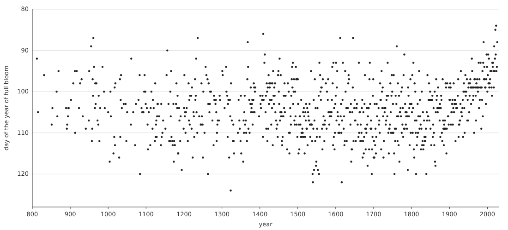

Prepared Clay
Twelve makers were asked to give one material a form: the day the cherry trees of Kyoto came into full bloom, 838 years from 812 to 2026. Each got the same brief. Only the preparation of the material differed. Four got a table, four got sentences, four got a picture. Guess which preparation each maker was given.
T a table, bloom.csv
P sentences, bloom.txt
I a picture, bloom.png
